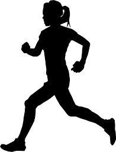

Cross country has been a main aspect of my life since middle school. Being part of a runner family, it was inevitable that I would continue the tradition. Since middle school cross country was not as time consuming, I was able to also do gymnastics and swimming. But once high school running began, the commitment became serious, and I had to decide to focus on solely running. My team was dedicated and worked hard, leading to three state championships in the four years I was there. I've decided to continue running in college on the UGA club team, where I have the choice of how competitive to be and how much time I want to dedicate to it. Running has become a lifestyle for me, and I can't go a day without it. To see out my high school team's result, check out this link! Walter Johnson Running

I've always loved sports, and throughout my life I have tried out many different ones before settling on running. These are the sports I have tried throughout the years:
| 3rd-6th Grade | 7th Grade | 8th Grade | 9th Grade | 10th Grade | 11th-12th Grade |
|---|---|---|---|---|---|
| Gymnastics | Gymnastics and Cross Country | Cross Country and Swimming | Cross Country, Swimming, Outdoor Track | Cross Country, Indoor Track, Lacrosse | Cross Country, Indoor and Outdoor Track |
My interest in singing and music began at a very young age, but didn't become a passion until the 6th grade. My chorus teacher had so much energy and compassion, making me want to sing more and more. I was selected for the acapella group in 7th grade, and we had the opportunity to sing the national anthem at a National's baseball game. In high school I was chosen to be a part of the Madrigal Chamber Choir group, where we performed and competed in music festivals with very tough music. As of now, I have not found a way to continue my singing in college, but I hope to find a way I can pick it up again!
Lifeguarding has been that job that is more like a fun activity for me. I competed for a summer swim club starting in 6th grade, and grew up with the kids and families involved with the team. When I stopped swimming to focus on running, I still wanted to be a part of the pool community, so I began lifeguarding in high school. Everyday I was able to work with close friends and enjoy the pool in the summer heat. Although it could be boring and tiring at points, lifeguarding was a great student job to make money, while doing something I enjoyed with friends. It also worked around my schedule, so I could choose the amount of hours I wanted to work. This past summer I decided to work much more than before, and typically spent 5 days a week at the pool.